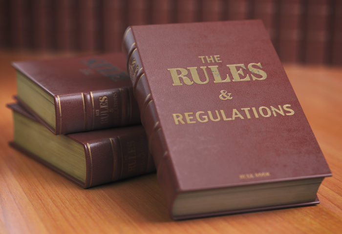

Rules
Objective:
The objective of the Football Site is to accurately predict the winners of NFL games each week throughout the season.
Participants:
Participants will make their weekly picks on Yahoo's Pro Pick 'Em platform, either on the website or the Yahoo Fantasy app.
Picking Games:
-
Each week, participants will select the team they believe will win each NFL game. Picks must be submitted 5 minutes before the scheduled kickoff time of each game.
-
Picks are made "straight up," meaning participants choose the team they expect to win without considering point spreads.
-
It is the participant's responsibility to ensure their picks are submitted on time. Late picks will not be accepted and will be graded as a loss.
Scoring:
- Participants will earn 1 point/win for each correct pick.Ties and losses will earn 0 points.
Tiebreaker rules:
In case of a tie in points/wins at the end of the week, the tiebreaker will be determined by Yahoo’s tiebreaker rules:
- Closest to the total points for the first Tiebreak Game.
- Closest to the home team points for the first Tiebreak Game.
- Closest to the road team points for the first Tiebreak Game.
- Closest to the total points for the second Tiebreak Game.
- Closest to the home team points for the second Tiebreak Game.
- Closest to the road team points for the second Tiebreak Game.
- Closest to the team whose team scores the most points.
- Closest to the team whose team scores the least points.
- Whichever player had more points in the previous week (or the week before that if still tied, etc.).
Example: Player A and Player B are tied with the most wins after all games are played for that week. The first Tiebreak Game had them guess the points for the Monday Night Football Game (Buffalo Bills @ NY Jets).
The final score in the game is:
Buffalo 27
NY Jets 14
Player A’s tiebreaker points guess was:
Buffalo 21
NY Jets 10
Player B’s tiebreaker points guess was:
Buffalo 35
NY Jets 14
The TOTAL points scored in the actual game was 41 (27+14). Player A’s total points guess was 31 (21+10). Player B’s total points guess was 49 (35+14). In this example, Player B would be the winner since their guess of 49 points is closer to 41, than Player A who guessed 31.
Weekly Prizes:
-
Prizes for weekly winners will be determined based on the amount of entries for that week. Prizes will be distributed every Tuesday.
Example: 50 entries
- $250 pot
- 1st place prize: $225
- 2nd place prize: $20
- Commissioner takes $5 out of the pot each week to help cover the cost of web hosting and all the time and effort running the pool.
The “Side Bet” & Rules:
The Side Bet is an optional $20 additional buy-in collected before the season starts. The Side Bet rewards consistency over the course of the season, with the Grand Prize being rewarded to the player with the most “wins” at the end of the year. And starting this year, 2nd and 3rd place will also be paid out.
Quarterly Prizes:
4 prizes will be rewarded for the most wins for each quarter of the season. After each quarter, everyone “resets” and starts with 0 to begin the next quarter. (Week 1-4, Weeks 5-9, Weeks 10-13, and Weeks 14-18).
Prizes for previous 22-23 Season:
- 55 people entered the $20 side bet, which put the pot at an even $1,100.
- Week 1, 2, 3, 4 most combined overall wins = $75
- Week 5, 6, 7, 8, 9 most combined overall wins = $100
- Week 10, 11, 12, 13 most combined overall wins = $75
- Week 14, 15, 16, 17, 18 most combined overall wins = $100
- Week 1 thru 18 most combined overall wins = $750
Prizes for current season:
Prize amounts are undetermined until the season begins. The more people that sign up, the more money there is to be won!
Tie-breaker Rules for Quarterly Prizes:
In case of a tie in points/wins at the end of each Quarter, the tiebreaker will be determined by Yahoo’s Weekly tiebreaker rules.
Tie-breaker Rules for Season Prizes:
In case of a tie in points/wins at the end of the season, the tiebreaker will be determined by Yahoo’s Season tiebreaker rules. Ties at the end of the regular season or playoffs are broken by:
- Previous week's points/wins.
- Each previous week's fantasy points until the tie is broken.
If 2 or more people are tied for the most wins at the end of the season, this means that the winner is whoever had the most wins the most recent week.
Example: Player A, B, and C are all tied with 173 points/wins at the end of the regular season. In Week 18 (Final week), Player A had 12 wins, Player B had 12 wins, Player C had 11 wins. In Week 17, Player A had 10 wins while Player B had 11 wins.
The Final Standings would be:
1st place: Player B
2nd place: Player A
>3rd place: Player C
Rules are taken directly from the Yahoo Website
Tips and general info:
- If you find yourself in a tie for the win with multiple people going into the Monday Night Football game, it's way more fun to watch when you know what to cheer for when it comes to the tie-breaker points everyone has chosen. You might want a high-scoring game or a low-scoring game depending on how many points you’ve guessed versus what your opposition guessed. Unfortunately, the Yahoo app doesn't allow you to view tie-breakers.
You must log into the website to view tie breakers. From there, you can view everyone’s tie-breaker guesses so you know exactly who and what to cheer for.
Note: Tie-breaker points guesses are not viewable until kick-off. They will appear blank until the game begins.
-
Make all of your picks early in the week. You can always go back and change them if you decide. That way if you forget, you at least have your picks in. If you forget to do them and it's 5 minutes until kick-off, you will be graded as a loss.
-
You can make as many changes to your picks as you want leading up to the game starting. This can lead to some strategy going into the final game of the week, and if you find yourself in the lead, or 1 game back.
-
The Standings page on the Yahoo website and App are updated after every game is final. However, players will not be ranked correctly until 12 AM PST. After that, all players will be ranked correctly. This is especially important on Monday nights. There might be 3+ people all tied for the lead after the game is over, but they might not be in the correct order.
For example: Monday night game is over and 3 people are tied, Player A, Player B and Player C. This is reflected on the Standings page right after the game, with Player A ranked above Player B and Player C. At midnight, Player B might be ranked 1st rather than Player A. Yahoo does not “grade” everything until midnight. This is why I wait until Tuesday to post the results and pay the correct winners.